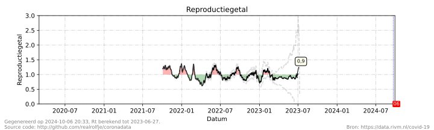
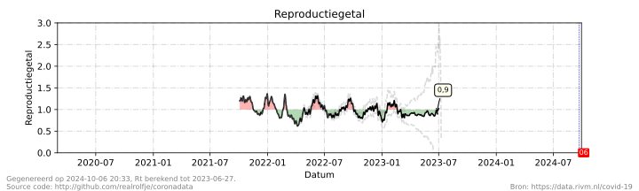
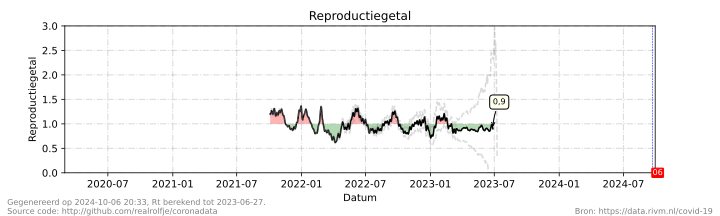

Geen smoesjes, je weet het best:
Houd afstand, werk thuis, was je handen, vermijd drukke plaatsen.

Data in deze grafieken is afkomstig van het RIVM (Rijksinstituut voor Volksgezondheid en Millieu) en Stichting NICE (Nationale Intensive Care Evaluatie). Wil je meer weten over hoe deze grafieken tot stand kwamen, zie de broncode.